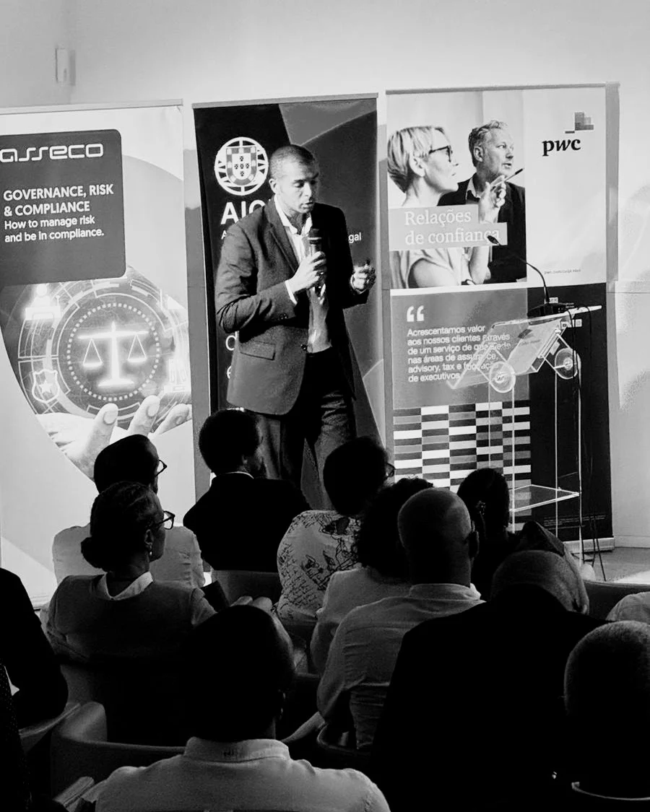

Your brand promises one thing. Your customers live another. They repeat themselves, teams hand problems across departments and nobody owns the whole journey. The offer is good. The experience hasn't caught up.
MAKING STRATEGY MOVE
I help leadership teams make better growth bets and run them.
Book a free Clarity CallSee how we can work togetherYou might recognize this
You've merged, and now you have two of everything: two portfolios, two ways of selling, two ideas of where to go next. Or you're a service business that wants to become a product business, with a different buyer and a different economics. Either way, someone has to decide what stays, what joins and what ships first.
The market you built for is getting smaller, or you're ready to try a new one. What worked at home may not travel as it is. Pricing, the offer and the way your people work all move with it.
Your offer has real value. Customers still can't see how it differs from the next one. The positioning sounds like everyone else's, and the conversation keeps drifting back to price.
AI is reshaping your industry, and the conversation inside the business hasn't caught up. Everyone agrees something should change. Nobody agrees on what, or what's worth protecting.
If one of these is you, let's talk.
Strategic bets
Every challenge above comes down to the same thing: a decision, and the commitment behind it. Commit your business to one direction and the impact is significant. Almost anything can be reversed, but at a price, and never overnight. That is what makes it strategic.
It is also why I call it a bet. Your resources are finite, so backing one direction means deliberately not backing another. The risk is real, and it doesn't disappear whether you decide alone or bring me in. It can be reduced. On the other side sits the reward: growth, and a business that stays relevant.
There are different ways to address a strategic bet without me:
If one of those works for you, use it. If none does, that is where I come in. I read the room, align the team and stay through the execution, with my reputation on the line.
Book a free Clarity CallI can't remove the risk, but I can reduce it. We test what could break the bet, starting with the cheapest tests, before the real money goes in. That is the backbone of my Strategic Bet Framework.
Making strategy move.
How we can work together
It starts with a Clarity Call
A free 30-minute call. We look at where you stand and which strategic bet you have in your hands. You leave with clarity on that, and we both know whether there is a fit.
Workshops & Retreats
When your team needs alignment or direction, a workshop can get you there.
I plan, design, facilitate and debrief the session, and follow up afterward. From two hours to two days, in person or remote.
Strategic Sprint
One sprint, one bet.
Four to eight weeks of focused work on a specific strategic bet. The length depends on how complex the bet is, how big the organization is and how available your team is. Most of the work happens remotely, and I join you in person at key moments. You end with a clear direction on how to execute the bet, clear alignment around it and clear trade-offs.
Fractional
For bets that need someone beside you through execution.
I stay on as an advisor, or as a fractional leader a couple of days a week.
Bespoke Projects
For a bigger problem with a defined scope, which needs more time and more expertise than I can offer alone.
We agree a scope, deliverables and a timeline in a proper statement of work. I assemble the team and manage it, and every expert is experienced and trusted.
You don't need to choose a format before we speak.
Book a free Clarity CallWhat it's like to work with me
“We went from scattered ideas to a clear strategy and priorities for next year.”
“Artur helped us think from the point of view of the user, a special skill for scaling.”
About Artur
I've been on both sides of the decision.
I'm Artur Poluektov. In 18 years across strategy, fintech, consulting, design thinking and digital innovation, I've advised the decision-maker, and I've been the person accountable for the outcome. My roles have included Managing Director, COO, Head of Strategy and CPO.
I was born in the Soviet Union and immigrated to Portugal at a young age. Living in two cultures taught me to adapt, read a room and translate between different ways of seeing the world. Playing away is different from playing at home. Working with the Dutch taught me to be direct. I tell you what I see, and I ask the questions nobody else is asking.
Working with me feels collaborative. I bring your customers into the room, and your team with them, because strategy built without the people it is for rarely survives contact with them. I build on the skills around the table and co-create the answer with you. I also combine creativity with structure, and I know when each one is needed. I like art, and I like math and precision. The best work uses both.
If your customers aren't in the room yet, that is where we start.
Learn moreSIBS · Deloitte Digital · Koos · Productized · A2F Consulting · Starweaver · Sonae · ANA Vinci Airports · PLMJ · OLX · Solvay · Cofidis · Pitch & Growth

Original thinking
If you like how I think, there is more of it.
I've been speaking for 10 years, in Portugal, London and Cape Verde, and at remote events across Europe. For startups and corporates, on small stages and big ones.
On stage. Keynotes, panels and corporate events, in person or remote, in English, Portuguese or Russian. Each talk starts with a question I work through with clients. The topics are the ones I work on:
Customer experience.
Why the customer belongs in the room, how to delight them and why it matters more as AI makes everything look the same.
Strategic bets.
How to run your business with a bet mindset: place bets, weigh the trade-offs, commit what's needed and de-risk your strategy.
International expansion.
How to build a business beyond borders, with the challenges you will face and the benefits that make it worth it.
Product innovation.
What to build in the age of AI, how to keep the customer at the center and how to sell it.
Thriving through change.
When the paradigm shifts, you can't stay still. How to play offense, and bring your team with you.
You get experience from the work itself, a challenge to comfortable assumptions and something useful to take back to your team.
In writing. I write on Substack about strategy, customers, growth and the choices businesses make when the next move is uncertain.
Mentoring
I believe in giving back. I mentor pro bono through four programs: Nova SBE Voice Leadership, Lisboa UX, Unicorn Factory Lisboa and FinTech House. If you are part of one of them, find me through them. Otherwise, contact me. I handpick the founders and leaders I mentor, and my time is limited.
A few questions you may have
What happens on a Clarity Call?
A free 30-minute conversation. We look at where you stand and which strategic bet you have in your hands. You don't need to define your challenge in advance or choose a format. Bring your context. There is no obligation, and we both leave knowing whether there is a fit.
Who do you work with?
Founders and leadership teams who own the growth call, with a team and budget already in place. Usually scale-ups and growing companies, or mid-market businesses in transformation, from a small team up to about 1,000 people. Mostly B2B and B2B2C, where technology plays a real role in how they grow. Very early-stage startups are usually too early for this kind of work, and I'm happy to point you to better help.
How do I know if we're a good fit?
It goes both ways. I work directly. I ask questions, challenge assumptions and bring your customers into the room. If you want someone to confirm a decision you've already made, I'm probably not the right person.
Do you stay for the execution?
Yes. A Strategic Sprint ends with a clear direction, alignment and trade-offs. If the bet needs someone beside you through execution, I stay on as a fractional leader or advisor. If it needs more expertise than I can offer alone, I assemble and manage a team of experienced, trusted experts under an agreed scope.
Do you work remotely or in person?
Both. Workshops can be in person or remote. Sprints and ongoing work are mostly remote, and I join you in person at key moments. I work in English, Portuguese and Russian, mostly with teams in Europe.
What does an engagement cost?
It depends on the scope, the format, the complexity of the challenge, the size of your organization and the value the work creates. I'll share a clear proposal once we understand the challenge. The Clarity Call is free. The work that follows is paid.
Is your mentoring free?
Through the four programs listed in the mentoring section, yes. Outside them, mentoring is paid, at a friendly fee we agree together. I handpick my mentees, and my time is limited.
Let's talk
If one of the challenges above sounds like yours, the best next step is a conversation.
Book a free Clarity CallPrefer to write? Tell me what you're working through. Speaking requests and mentoring questions are welcome too.